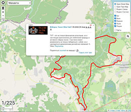
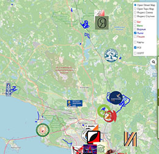
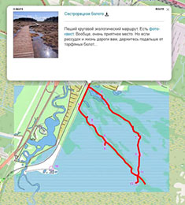
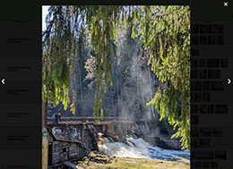
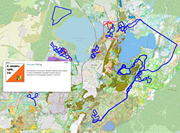
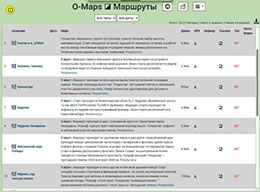

Общее описание

Страница устроена так же, как «Карты на карте»: те же подложки, инструменты, контекстное меню и поиск. Отличия - в наборе слоёв и во всплывающей информации. В контекстном меню вместо пунктов о картах - «Показать все треки» и «Скрыть все треки».
В заголовке страницы есть выпадающий список месяцев: он оставляет на карте только маршруты соревнований, проводившихся в выбранном месяце.
Те же маршруты есть на страницах с картами регионов в слое «Маршруты» (см. слои карт).
Слои

- Карты - рогейнерские карты;
- POI - полезные места: клубы, центры многодневок, лыжная инфраструктура (УТЦ, Охта Парк, Ярви, Гарболово, Прибой и др.);
- ООПТ - границы особо охраняемых природных территорий.
Информация о маршруте
 
- название (со ссылкой на описание маршрута, если оно есть) и длина трека;
- кнопка скачивания GPX-трека;
- значок ⭐, если маршрут маркирован на местности;
- вид маршрута, для лыжных - тип трассы (см. ниже);
- дата и соревнование - для маршрутов стартов;
- описание, ссылки на результаты и видео;
- ссылка «Картинки», открывающая фотографии маршрута в режиме слайд-шоу.
Лыжные трассы

- Конёк - регулярная трасса для конькового хода, прокатывается техникой;
- Классика - постоянная классическая лыжня, прокатывается техникой;
- Непостоянно - трасса прокатывается техникой, но не регулярно;
- Парк - парковая дорожка, на хороших лыжах сюда не стоит;
- Самотоп - самотопная лыжня, которой может и не быть.
Таблица маршрутов

Параметры запуска
| Параметр | Описание | Пример использования |
|---|---|---|
| track | Карта откроется на треке, имя GPX-файла которого содержит указанную строку. | https://o-maps.spb.ru/tracks.html?track=sestrorezkoe_boloto |
| onlytrack | То же, но будет загружен ТОЛЬКО этот трек. | https://o-maps.spb.ru/tracks.html?onlytrack=sestrorezkoe_boloto |
| track-type | Только маршруты одного вида: WALK, RUN, SKI, VELO, WATER. | https://o-maps.spb.ru/tracks.html?track-type=SKI |
| track-month | Только маршруты соревнований, проводившихся в указанном месяце (01 - 12). | https://o-maps.spb.ru/sheet-tracks.html?track-month=02 |
| start | Только маршруты указанного соревнования или серии (например, забегов «5 Вёрст»). | https://o-maps.spb.ru/sheet-tracks.html?start=PARKRUN |
| q | Строка поиска для таблицы маршрутов. | https://o-maps.spb.ru/sheet-tracks.html?q=токсово |
| poi, oopt, calendar | Включают слои POI, ООПТ и календаря - так же, как на страницах с картами. | https://o-maps.spb.ru/tracks.html?poi |